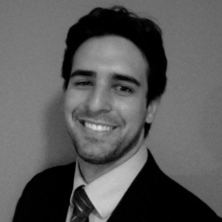

<!-- CONTENIDO -->
<section>
	<div id="section_content">
    	<div id="column_left02">
        	
            
            <h2>About TEDx, x = independently organized event</h2>

			<p>In the spirit of ideas worth spreading, TEDx is a program of local, self-organized events that bring people together to share a TED-like experience. At a TEDx event, TEDTalks video and live speakers combine to spark deep discussion and connection in a small group. These local, self-organized events are branded TEDx, where x = independently organized TED event. The TED Conference provides general guidance for the TEDx program, but individual TEDx events are self-organized. (Subject to certain rules and regulations.)</p>

			<h2>About TED</h2>

			<p>TED is a nonprofit organization devoted to Ideas Worth Spreading. Started as a four-day conference in California 25 years ago, TED has grown to support those world-changing ideas with multiple initiatives. The annual TED Conference invites the world's leading thinkers and doers to speak for 18 minutes. Their talks are then made available, free, at TED.com. TED speakers have included Bill Gates, Al Gore, Jane Goodall, Elizabeth Gilbert, Sir Richard Branson, Nandan Nilekani, Philippe Starck, Ngozi Okonjo-Iweala, Isabel Allende and UK Prime Minister Gordon Brown.</p> 
			
			<p>The annual TED Conference takes place in Long Beach, California, with simulcast in Palm Springs; TEDGlobal is held each year in Oxford, UK. TED's media initiatives include TED.com, where new TEDTalks are posted daily, and the Open Translation Project, which provides subtitles and interactive transcripts as well as the ability for any TEDTalk to be translated by volunteers worldwide. TED has established the annual TED Prize, where exceptional individuals with a wish to change the world are given the opportunity to put their wishes into action; TEDx, which offers individuals or groups a way to organize local, independent TED-like events around the world; and the TEDFellows program, helping world-changing innovators from around the globe to become part of the TED community and, with its help, amplify the impact of their remarkable projects and activities.</p>

			<p>Follow TED on Twitter at <a href="http://www.twitter.com/TEDTalks">@TEDTalks</a>, or on Facebook at <a href="http://www.facebook.com/TED">facebook.com/TED</a>.</p>
			
			<h2>TEDx San Juan Organizers<h2>
			
			<p> Team profiles </p>
			
			<h2> Ivan Rios Mena </h2>
			
			<p> Startup and general corporate lawyer, thinker and speaker on startup and alternative dispute resolution issues, Attendee Curator of TEDxSanJuan, President of the Corporate Law Commission of the Puerto Rico Bar Association, founder of startup law firm Ivan Legal LLC. Helps startups, micro, small, and medium businesses develop incorporation, intellectual property, and general corporate strategies.</p>
        </div>

	    {% include right_column.html %}
    </div>
</section>
